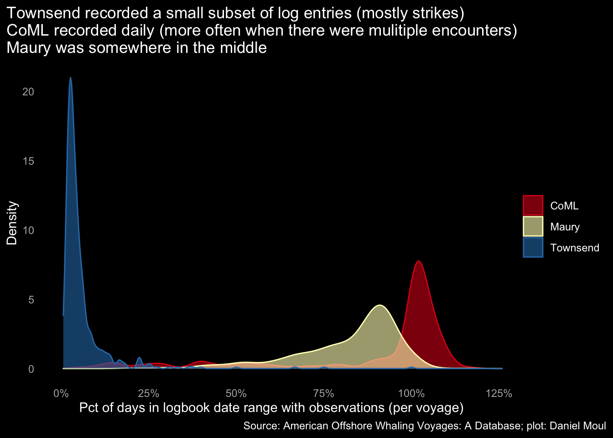
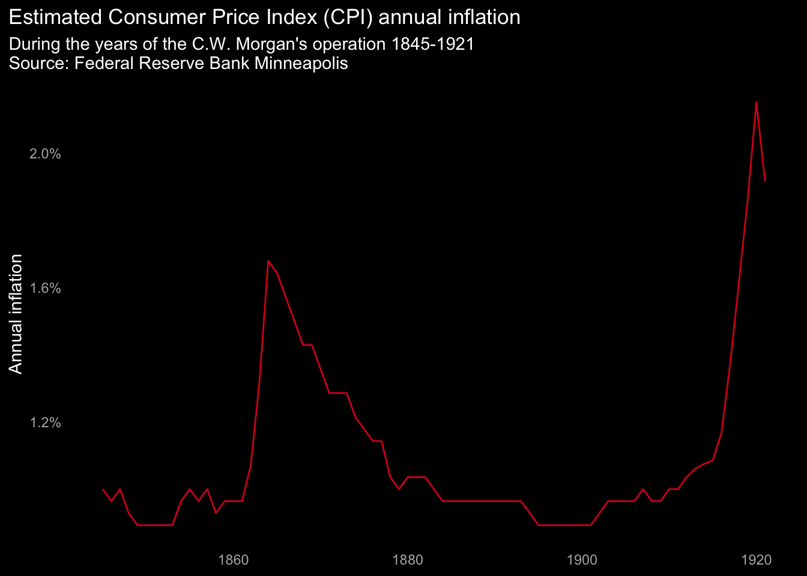

11 Appendix
11.1 Dealing with errors, duplicates, and omissions
Hand-written records have errors. Many people in many locations over more than 150 years wrote entries in paper ledgers as part of their normal work. Men on each voyage wrote daily entries in the ships’ logs. Spellings varied. Abbreviations were inconsistently applied. Some entries are illegible. Some are simply missing. A portion of this data was heroically transcribed into electronic records and made available freely for others to use–including in this work.
Below I summarize actions I took to make the best use of the data at hand and to minimize the chance of misleading presentation or inference. Since this is a descriptive, informal analysis and not one that could be used to make decisions, I have favored simplicity over rigor in my assumptions and techniques.
11.1.1 Voyages
Sources of log data
As noted in Section 3.4 Observations in the logbooks, Townsend transcribed only a small subset of the daily log data, resulting in under-reporting sightings and strikes.

Duplicate voyage data
The dataset includes some duplicates of voyages arising from the use of three sources (in chronological order): Townsend, Maury and Census on Marine Life (CoML). Where there are duplicates, I take CoML over the others and Maury over Townsend.
Limited detailed log data
As seen in Figure 3.4 there is log data for 1,346 of the 15,608 voyages (8.6%). Even though the detailed logs are a convenience sample (no effort has been made to select voyages randomly or in a way that is stratified by some meaningful characteristic), I assume the voyages for which detailed logs are not available are reasonably similar in nature and distribution to ones for which there is log data.
Simulated voyage day_in and/or year_in data
Simulated day_out and day_in (and in some cases year_in) data provides more than four times the number of voyages to work with (compare Figure 3.6 and Figure 3.7. The simulated days use the frequencies in the complete data to weight the randomly selected simulated data.
Voyage log gaps
For analysis, voyages that have a gap of more than a year between observations have been dropped, since I assume the data is too poor to use. In this case the voyage could be (and perhaps should be) categorized as two separate voyages.
For plotting, voyages that have a gap in the logs of more than seven days have been dropped.
I manually viewed all tracks that passed the above filters, and identified a subset as good tracks for plotting. I excluded ones with widely misplaced points (likely a data error), or gaps that led to tracks crossing land masses when plotting the segment between the points.
11.1.2 Voyage outlier data likely to be data errors
In some cases I removed a small number of the largest data poitns that were implausably larger than the next highest values. For example, in product_per_day calculated from the Logbook table joined to the Voyages table:
| Top values of product_per_day are more than 100x the median value more than the next highest values |
||||
| voyage_id | voyage_name | metric | metric_value | multiple_of_median |
|---|---|---|---|---|
| oil | ||||
| AV17136 | Pioneer : 1880 | prod_per_day | 3,938 | 163 |
| AV17275 | Seychelle : 1853 | prod_per_day | 945 | 39 |
| AV05614 | George and Martha : 1845 | prod_per_day | 394 | 16 |
| AV16788 | Thomas Pope : 1881 | prod_per_day | 336 | 14 |
| AV10935 | Orca : 1887 | prod_per_day | 336 | 14 |
| sperm | ||||
| AV17136 | Pioneer : 1880 | prod_per_day | 3,402 | 170 |
| AV13209 | Solon : 1844 | prod_per_day | 2,362 | 118 |
| AV02737 | Charles W. Morgan : 1920-1921 | prod_per_day | 316 | 16 |
| AV06314 | Helen : 1848 | prod_per_day | 251 | 13 |
| AV04977 | Florence : 1876 | prod_per_day | 240 | 12 |
11.1.3 Tonnage ambiguity
Vessels were modified during their working years, which could significantly change their tonnage. The voyages data set include multiple tonnages for many ships represented in the form: “218/130/145”; this example is from the bark A. R. Tucker (vessel AS0020) for which the data set includes voyages starting in 1851 and ending in 1906. Since the years of each configuration are not included, I used the largest number. Thus the plot of tonnage by decade in Section 4.2 may overstate vessels’ tonnage in their early or late years, when I assume vessels sailed in configurations with lower tonnages.
11.1.4 Masters’ total years at sea
Since most voyages lack good duration data (see Simulated voyage day_in and/or year_in data above), and since duration of voyages varied over the decades (see Figure 3.11), where there is actual or estimated voyage duration for at least one of a master’s voyage, for Figure 5.6 I used the average of all that master’s voyages for each voyage, and summed the total for each master.
11.1.5 Crew size
I assume that any vessel with less than 12 crew has an incomplete crew list, and I excluded it from the plots in Section 6.1 Number of crew.
11.1.6 Unique crew members
There is no unique identifier per person. The crewentry_id field in the crew lists is based on the crewlist_id, and the spellings and abbreviations of names were not always consistent. Thus its difficult to identify individual people who participated in multiple voyages. It is tractable problem to reduce the over-count in the 88 voyages that have two or three crew lists, since a voyage happens over a short time frame with a small set of the universe of crew members. I made an effort to remove duplicates in this case, however there are some remaining due to differences in the spellings individual first or last names. I did not spend the time to find and address these individual cases among the 164,506 crew records remaining.
11.1.7 Crew skin color
The many clerks over many years recording skin color likely did not apply consistent definitions or spellings. I consolidated 207 unique skin descriptions (including misspellings) into four categories:
| Crew skin color in consolidated categories | |
| skin | n_crew |
|---|---|
| unknown | 78,780 |
| white, light, fair | 43,381 |
| negro, black, colored | 38,464 |
| other | 3,881 |
It’s likely my interpretation does not match the recording clerks’ interpretation in some cases. For example, in which category should I place “brown”? To illustrate the challenge, some of the logic used to classify is shown below. Note that any category with less than 3000 instances is placed in “other”.
df_crew_skin <- df_crew %>%
mutate(skin = str_to_lower(skin),
skin = case_when(
str_detect(skin, "light|fair|fare|freck|white") ~ "white, light, fair",
str_detect(skin, "black|blk|negro|colo|african|coulered|collourd|sable|dark|lite")
~ "negro, black, colored",
skin == "b" ~ "negro, black, colored",
str_detect(skin, "indian|swarthy|copper|tawny|brown|coffee|mixed|native")
~ "mulatto, swarthy, tawny, brown",
str_detect(skin, "tto|mullato|mulato|sepia|seppia|sambo") ~ "mulatto, swarthy, tawny, brown",
str_detect(skin, "olive|portuguese|portguguese|portugues|portugese")
~ "olive, portuguese",
str_detect(skin, "yellow") ~ "yellow, yellowish",
str_detect(skin, "ruddy|rudy|red") ~ "ruddy, red",
is.na(skin) ~ "unknown",
TRUE ~ skin
),
skin = fct_lump_min(skin, min = 3000, other_level = "other")
)11.2 Product and revenue
11.2.1 Other whale products
As noted at whalingmuseum.org (“Whales and Hunting” 2022-08-18), while the three products in our data set (sperm oil, whale oil, and baleen bone) were the most common, whaling crews did gather other products: (1) spermaceti (a liquid wax from sperm whale heads); and (2) rare but extremely valuable ambergris (a lumpy product of whale intestines). Thus the revenue estimates per voyage and the combinations of products collected are necessarily understated.
11.2.2 Accounting for product from ships that were lost
The voyages data set appears to include records for voyages in ships were lost or abandoned yet quantities of product (whale, sperm, bone) are recorded. It’s likely that as the masters took their logs with them but were not able to sell the product they collected. Thus in some cases revenue per voyage may be overstated.
11.2.3 Product per day
Some voyages appear to last only a few days, likely due to incorrect start or end dates for the voyage. The resulting product per day amounts are not credible. To partially adjust for this, I excluded voyages shorter than 7 days in Section 8.4.3 Normalized product yield.
11.2.4 Inflation
Prices for the Charles W. Morgan’s products come from Mystic Seaport Museum. As noted in Section 9.2 Charles W. Morgan I did not adjust for inflation except in Figure 9.3 Revenue for Charles W. Morgan’s product each voyage, because inflation was low during this period. This conclusion is based on estimates of CPI from the Federal Reserve Bank of Minneapolis (“Consumer Price Index, 1800-” 2022-08-26):

11.3 How many gallons in a barrel of whale oil?
As noted on the Petroleum History Institute website (Pees 2004)
The petroleum barrel… contains 42 gallons. Sources used in researching the whale oil barrel ranged from 30 to 35 gallons. Like the early days of the petroleum barrel (1860’s), the whale oil barrel didn’t seem to settle exactly for a prescribed gallonage in its infancy.
Since Mystic Seaport Museum used 31.5 gallons/barrel in Statistical and Financial Results of the 37 Voyages of the ship Charles W. Morgan, I use 31.5 everywhere.
11.4 Data definition
More information about about data tables and columns can be found here:
voyages,return_code,masters_fate,vessel_rigand other abbreviations: https://whalinghistory.org/av/voyages/columns/crewlistandcrew: https://whalinghistory.org/av/crew/columns/
11.5 Reproducing this analysis
The quarto (.qmd) and R (.R) scripts used to generate this analysis along with prerequisite data and image files are available at https://github.com/dmoul/american-whaling
11.6 Charles W. Morgan’s voyages
Below is more information about the tracks and whale sightings in Section 10.1 Voyages of the Charles W. Morgan. The first 13 voyages sailed from home port of New Bedford, MA to whaling grounds worldwide (1841-1887). Then, presumably because much of the sailing would be in the Pacific, the Morgan’s home port shifted to San Francisco, CA for the next 17 voyages (1887-1906). The remaining 7 voyages in the dataset were again from New Bedford, MA (1906-1921); these voyages were generally limited to the Atlantic. Note voyages with a voyage_rank greater than one indicate a replacement master.
| The voyages of the Charles W. Morgan | ||||||
| voyage_id | voyage_rank | port | ground | year_out | year_in | master |
|---|---|---|---|---|---|---|
| AV02712 | 1 | New Bedford, MA | Pacific | 1841 | 1845 | Norton, Thomas Adams |
| AV02713 | 1 | New Bedford, MA | Pacific | 1845 | 1848 | Sampson, John D. |
| AV02714 | 1 | New Bedford, MA | S. Pacific | 1849 | 1853 | Sampson, John D. |
| AV02715 | 1 | New Bedford, MA | — | 1853 | 1856 | Ripley, Tristram Pease |
| AV02716 | 1 | New Bedford, MA | Pacific | 1856 | 1859 | Fisher, Thomas N. |
| AV02717 | 1 | New Bedford, MA | Okhotsk, W Arctic, N Pacific | 1859 | 1863 | Hamilton, James Albert*** |
| AV02717 | 2 | New Bedford, MA | Okhotsk, W Arctic, N Pacific | 1859 | 1863 | Smith, George**** *** |
| AV02717 | 3 | New Bedford, MA | Okhotsk, W Arctic, N Pacific | 1859 | 1863 | Hamilton, James Albert**** |
| AV02720 | 1 | New Bedford, MA | Okhotsk, S Pacific, N Pacific | 1863 | 1867 | Landers, Thomas C. |
| AV02721 | 1 | New Bedford, MA | S Pacific | 1867 | 1871 | Athearn, George F. |
| AV02722 | 1 | New Bedford, MA | Indian | 1871 | 1874 | Tinkham, John Maxfield |
| AV02723 | 1 | New Bedford, MA | Atlantic | 1875 | 1878 | Tinkham, John Maxfield |
| AV02724 | 1 | New Bedford, MA | Atlantic | 1878 | 1881 | Ellis, Thomas L. |
| AV02725 | 1 | New Bedford, MA | Pacific | 1881 | 1886 | Keith, Charles Frederick |
| AV02725 | 2 | New Bedford, MA | Pacific | 1881 | 1886 | Lawrence, James F.**** *** ? |
| AV02725 | 3 | New Bedford, MA | Pacific | 1881 | 1886 | Keith**** ? |
| AV02727 | 1 | New Bedford, MA | N Pacific | 1886 | 1887 | Smith, George A. |
| AV02738 | 1 | San Francisco, CA | Japan & Ochotsk | 1887 | 1888 | Smith, George A. |
| AV02739 | 1 | San Francisco, CA | Japan & Ochotsk | 1888 | 1889 | Layton, John S. |
| AV02740 | 1 | San Francisco, CA | N Pacific | 1889 | 1890 | Layton, John S. |
| AV02741 | 1 | San Francisco, CA | — | 1890 | 1891 | Earle, James A. M. |
| AV02742 | 1 | San Francisco, CA | Japan & Ochotsk | 1891 | 1892 | Earle, James A. M. |
| AV02743 | 1 | San Francisco, CA | Japan & Ochotsk | 1892 | 1893 | Earle, James A. M. |
| AV02744 | 1 | San Francisco, CA | Japan & Ochotsk | 1893 | 1895 | Earle, James A. M. |
| AV02745 | 1 | San Francisco, CA | N Pacific | 1895 | 1896 | Earle, James A. M. |
| AV02746 | 1 | San Francisco, CA | Japan & Ochotsk | 1896 | 1897 | Layton, John S. |
| AV02747 | 1 | San Francisco, CA | Japan & Ochotsk | 1897 | 1898 | Scullun, Thomas |
| AV02748 | 1 | San Francisco, CA | Japan & Ochotsk | 1898 | 1899 | Scullun, Thomas |
| AV02749 | 1 | San Francisco, CA | N Pacific | 1899 | 1900 | Scullun, Thomas |
| AV02750 | 1 | San Francisco, CA | Japan & Ochotsk | 1900 | 1901 | Earle, James A. M. |
| AV02751 | 1 | San Francisco, CA | Japan & Ochotck | 1901 | 1902 | Scullun, Thomas |
| AV02752 | 1 | San Francisco, CA | Japan & Ochotsk | 1902 | 1903 | Earle, James A. M. |
| AV02753 | 1 | San Francisco, CA | Japan & Ochotsk | 1903 | 1904 | Earle, James A. M. |
| AV02754 | 1 | San Francisco, CA | N Pacific | 1904 | 1906 | Reed, Edwin J. |
| AV02728 | 1 | New Bedford, MA | Atlantic | 1906 | 1908 | Earle, James A. M.*** |
| AV02728 | 2 | New Bedford, MA | Atlantic | 1906 | 1908 | Nye, Hiram**** |
| AV02730 | 1 | New Bedford, MA | Atlantic | 1908 | 1910 | Gibbons, Arthur O.*** |
| AV02730 | 2 | New Bedford, MA | Atlantic | 1908 | 1910 | Roderick, Joseph**** *** |
| AV02730 | 3 | New Bedford, MA | Atlantic | 1908 | 1910 | Church, Charles S.**** |
| AV02733 | 1 | New Bedford, MA | Atlantic | 1911 | 1913 | Church, Charles S. |
| AV02734 | 1 | New Bedford, MA | Desolation | 1916 | 1917 | Cleveland, Benjamin D. |
| AV02735 | 1 | New Bedford, MA | Atlantic | 1918 | 1919 | Edwards, Joseph F. |
| AV02736 | 1 | New Bedford, MA | Atlantic | 1919 | 1920 | Edwards, Joseph F. |
| AV02737 | 1 | New Bedford, MA | Atlantic | 1920 | 1921 | Gonsalves, John Teofilo |
11.7 All good voyage tracks
Below is more information about the tracks plotted in Chapter 10 Voyage Tracks.
| All 138 plotted voyages undertaken by 109 vessels |
|||||||||||||
| Voyage | Product | Voyage stats | Vessel | ||||||||||
|---|---|---|---|---|---|---|---|---|---|---|---|---|---|
| voyage_id | voyage_name | ground | bone | sperm | oil | distance_km | avg_distance_day | n_obs | duration_days | log_date_min | log_date_max | vessel_id | tonnage_max |
| AV01286 | Asia : 1791-1794 | Brazil, Desolation, West Indies | — | 180 | 21 | 62,301 | 74 | 856 | 846 | 1791-09-30 | 1794-01-23 | AS0916 | — |
| AV09119 | Martha : 1815-1816 | Brazil | — | — | — | 32,469 | 100 | 334 | 323 | 1815-06-21 | 1816-05-09 | AS0401 | 271 |
| AV09120 | Martha : 1816-1817 | Brazil | — | — | 1,600 | 35,397 | 112 | 324 | 314 | 1816-08-08 | 1817-06-18 | AS0401 | 271 |
| AV09792 | Milwood : 1817-1818 | S Atlantic | — | — | 1,200 | 36,609 | 109 | 345 | 336 | 1817-08-16 | 1818-07-18 | AS0403 | 254 |
| AV09793 | Milwood : 1818-1820 | Patagonia | — | — | 1,600 | 47,062 | 89 | 551 | 526 | 1818-09-03 | 1820-02-11 | AS0403 | 254 |
| AV01488 | Balaena : 1818-1821 | Pacific | — | 1,500 | — | 102,021 | 108 | 992 | 940 | 1818-11-13 | 1821-06-10 | AS0064 | 301 |
| AV09795 | Milwood : 1821-1822 | Brazil | — | — | 1,700 | 36,588 | 130 | 295 | 280 | 1820-06-22 | 1821-03-29 | AS0403 | 254 |
| AV00455 | Alexander : 1821-1824 | Pacific | — | 2,836 | — | 123,263 | 123 | 1152 | 989 | 1821-08-18 | 1824-05-03 | AS0005 | 421 |
| AV11187 | Packet : 1822-1823 | carib | — | 160 | — | 28,085 | 79 | 363 | 354 | 1822-06-28 | 1823-06-17 | AS0527 | 99 |
| AV09015 | Maria Theresa : 1822-1823 | South Seas | — | — | 2,000 | 38,175 | 113 | 356 | 335 | 1822-07-05 | 1823-06-05 | AS0411 | 330 |
| AV13262 | South America : 1823-1824 | — | — | 54 | 1,427 | 35,473 | 133 | 285 | 265 | 1823-08-22 | 1824-05-13 | AS2405 | 397 |
| AV15152 | Victory : 1824-1825 | — | 9,100 | 160 | 1,580 | 36,461 | 107 | 342 | 341 | 1824-07-21 | 1825-06-27 | AS0668 | 269 |
| AV09574 | Mercury : 1825-1827 | Pacific | — | 2,485 | — | 113,224 | 119 | 1003 | 948 | 1825-05-25 | 1827-12-29 | AS0412 | 340 |
| AV01390 | Atlas : 1825-1826 | Coast of Brazil | — | 20 | 300 | 38,404 | 107 | 395 | 355 | 1825-07-26 | 1826-07-16 | AS0926 | 260 |
| AV02118 | By Chance : 1826-1828 | — | — | 160 | — | 25,668 | 96 | 272 | 267 | 1826-10-17 | 1827-07-11 | AS1015 | 107 |
| AV07073 | Industry : 1827 | Atlantic, W Indies, Gulf of Mexico | — | 170 | 15 | 1,937 | 27 | 40 | 71 | 1827-03-31 | 1827-06-10 | AS1654 | 94 |
| AV05358 | Galatea : 1827-1828 | S Atlantic | 10,085 | 260 | 1,285 | 40,644 | 102 | 427 | 396 | 1827-06-06 | 1828-07-06 | AS0262 | 310 |
| AV07074 | Industry : 1828 | Atlantic, W Indies, Gulf of Mexico | — | 160 | 20 | 14,228 | 69 | 212 | 207 | 1828-01-16 | 1828-08-10 | AS1654 | 94 |
| AV07075 | Industry : 1828-1829 | Atlantic, W Ind | — | 150 | 8 | 11,868 | 54 | 221 | 218 | 1828-12-20 | 1829-07-26 | AS1654 | 94 |
| AV11755 | Ploughboy : 1830-1834 | Pacific | — | 1,750 | — | 128,501 | 102 | 1355 | 1256 | 1830-10-16 | 1834-03-25 | AS0542 | 391 |
| AV02143 | Cadmus : 1831-1834 | Pacific | — | 2,313 | — | 111,538 | 107 | 1076 | 1044 | 1831-05-23 | 1834-04-01 | AS1019 | 320 |
| AV07939 | Julius Caesar : 1831-1832 | S Atlantic | — | 300 | 2,000 | 13,843 | 72 | 131 | 193 | 1831-07-01 | 1832-01-10 | AS1737 | 347 |
| AV11281 | Parker : 1831-1835 | Pacific | — | 3,150 | — | 133,613 | 108 | 1278 | 1232 | 1831-10-10 | 1835-02-23 | AS0535 | 406 |
| AV09201 | Mary(s) : 1832-1833 | Pacific | — | — | 85 | 45,619 | 163 | 279 | 280 | 1832-12-05 | 1833-09-11 | AS0237 | 330 |
| AV10772 | Ohio II : 1833-1837 | Pacific | — | 2,615 | 176 | 152,358 | 120 | 1288 | 1267 | 1833-08-03 | 1837-01-21 | AS0516 | 383 |
| AV05689 | George Howland : 1834-1838 | Pacific | — | 2,833 | — | 111,823 | 98 | 1250 | 1135 | 1834-12-05 | 1838-01-13 | AS0236 | 374 |
| AV02765 | Charleston Packet : 1835-1837 | S Atlantic | 8,000 | 40 | 874 | 40,844 | 85 | 479 | 478 | 1835-11-23 | 1837-03-15 | AS0106 | 184 |
| AV01044 | Annawan : 1836-1837 | Atlantic, Gulf of Mexico, W Indies, carib | 0 | 178 | 20 | 12,833 | 69 | 197 | 184 | 1836-12-16 | 1837-06-18 | AS0887 | 158 |
| AV02182 | Caledonia : 1837-1839 | — | — | 250 | 1,650 | 72,153 | 114 | 645 | 631 | 1837-06-17 | 1839-03-10 | AS1024 | 445 |
| AV04243 | Elizabeth : 1837-1838 | Atlantic | — | 188 | 6 | 21,705 | 81 | 274 | 269 | 1837-09-12 | 1838-06-08 | AS0203 | 107 |
| AV01014 | Ann Maria : 1837-1838 | No Atlantic O | — | 110 | — | 26,607 | 116 | 230 | 229 | 1837-12-08 | 1838-07-25 | AS0878 | 196 |
| AV13218 | Solon : 1838-1839 | Atlantic, W Indies, Carib | — | 440 | — | 32,922 | 105 | 322 | 314 | 1838-06-06 | 1839-04-16 | AS0631 | 129 |
| AV15502 | William : 1838 | No Atlantic | — | 400 | — | 14,687 | 136 | 109 | 108 | 1838-06-26 | 1838-10-12 | AS2625 | 107 |
| AV15599 | William Baker : 1838-1839 | S Atlantic | — | 180 | 620 | 38,627 | 136 | 299 | 282 | 1838-07-11 | 1839-04-19 | AS2610 | 224 |
| AV01015 | Ann Maria : 1838-1839 | S Atlantic | — | 250 | — | 47,509 | 110 | 433 | 430 | 1838-08-20 | 1839-10-24 | AS0878 | 196 |
| AV07998 | Juno : 1838-1839 | Atlantic, W Indies, Gulf of Mexico | — | 404 | 14 | 4,888 | 66 | 41 | 73 | 1839-03-06 | 1839-05-18 | AS0316 | 123 |
| AV04245 | Elizabeth : 1839-1840 | Atlantic | — | 220 | — | 31,736 | 99 | 323 | 319 | 1839-07-23 | 1840-06-06 | AS0203 | 107 |
| AV04246 | Elizabeth : 1840 | Atlantic | — | 150 | — | 11,814 | 95 | 125 | 124 | 1840-07-01 | 1840-11-02 | AS0203 | 107 |
| AV01909 | Bogota : 1840-1842 | N Atlantic | — | 356 | — | 63,616 | 120 | 534 | 528 | 1840-09-11 | 1842-02-21 | AS0065 | 155 |
| AV05729 | George Washington : 1841-1842 | — | — | 306 | — | 62,377 | 100 | 632 | 623 | 1841-03-25 | 1842-12-08 | AS0242 | 242 |
| AV08342 | Leonidas : 1841-1842 | Atlantic, Gulf of Mexico, W Indies | 0 | 350 | 0 | 27,803 | 77 | 365 | 363 | 1841-05-04 | 1842-05-02 | AS0396 | 128 |
| AV04248 | Elizabeth : 1841-1842 | Atlantic, Gulf of Mexico, W Indies | 0 | 260 | 120 | 30,867 | 88 | 357 | 352 | 1841-05-18 | 1842-05-05 | AS0203 | 107 |
| AV11855 | Popmunett : 1842-1843 | Atlantic, Gulf of Mexico | — | 350 | 60 | 4,666 | 117 | 25 | 40 | 1842-03-13 | 1842-04-22 | AS2218 | 184 |
| AV13875 | Thomas Winslow : 1841-1842 | Atlantic, W Indies, Gulf of Mexico | — | 130 | 7 | 6,261 | 86 | 39 | 73 | 1842-03-25 | 1842-06-06 | AS0661 | 136 |
| AV06172 | Harbinger : 1842-1844 | Indian O, Pacific | 6,000 | 300 | 700 | 114,571 | 141 | 844 | 809 | 1842-08-04 | 1844-10-21 | AS1535 | 262 |
| AV07694 | John B. Dods : 1842-1843 | Atlantic, Gulf of Mexico | — | 200 | 100 | 6,087 | 74 | 48 | 82 | 1843-03-22 | 1843-06-12 | AS1710 | 163 |
| AV06987 | India : 1843-1845 | Indian, N Pacific | 30,000 | — | 3,153 | 100,491 | 143 | 742 | 700 | 1843-05-11 | 1845-04-10 | AS0302 | 366 |
| AV06062 | Halcyon : 1843-1844 | — | — | — | 500 | 35,104 | 97 | 367 | 361 | 1843-08-12 | 1844-08-07 | AS1510 | 311 |
| AV04814 | Fairy : 1843-1844 | Atlantic, W Indies, Gulf of Mexico | 0 | 490 | 0 | 41,339 | 100 | 425 | 410 | 1843-09-09 | 1844-10-23 | AS1345 | 186 |
| AV02476 | Catherwood : 1844-1845 | Atlantic | — | 750 | — | 59,817 | 57 | 1068 | 523 | 1844-01-25 | 1845-07-01 | AS1057 | 199 |
| AV02696 | Charles Phelps : 1844-1847 | Pacific | 16,000 | 50 | 1,750 | 117,870 | 114 | 1134 | 1024 | 1844-06-25 | 1847-04-15 | AS1085 | 362 |
| AV02280 | Candace : 1845-1847 | Pacific | 44,135 | 100 | 2,100 | 101,361 | 146 | 710 | 692 | 1845-06-02 | 1847-04-25 | AS1029 | 310 |
| AV04726 | Exchange : 1847-1849 | N Atlantic, S Atlantic | — | 468 | 4 | 83,148 | 114 | 748 | 729 | 1847-05-04 | 1849-05-02 | AS0181 | 181 |
| AV04582 | Erie : 1847-1850 | Pacific | 43,500 | 266 | 3,200 | 120,048 | 125 | 1008 | 953 | 1847-09-01 | 1850-04-11 | AS2753 | 451 |
| AV09260 | Mary and Susan : 1847-1850 | Pacific | 45,000 | 40 | 3,200 | 112,654 | 127 | 952 | 882 | 1847-10-23 | 1850-03-23 | AS1875 | 392 |
| AV15572 | William and Eliza : 1848-1852 | Pacific | — | 1,461 | 23 | 168,463 | 119 | 1439 | 1408 | 1848-11-26 | 1852-10-04 | AS0680 | 321 |
| AV01579 | Barclay : 1850-1852 | S Atlantic, N Atlantic | — | 974 | — | 87,352 | 123 | 717 | 710 | 1850-05-12 | 1852-04-21 | AS0067 | 281 |
| AV10278 | Nassau : 1850-1853 | — | 35,800 | 170 | 2,612 | 122,088 | 120 | 1022 | 1019 | 1850-08-07 | 1853-05-22 | AS0492 | 408 |
| AV05038 | Fortune : 1850-1854 | W Arctic, N Pacific, Okhotsk | 32,308 | 202 | 2,525 | 166,645 | 64 | 2660 | 1305 | 1850-10-21 | 1854-05-18 | AS0224 | 292 |
| AV11117 | Pacific : 1851-1854 | Pacific | 46,098 | 360 | 865 | 141,585 | 119 | 1247 | 1185 | 1851-02-17 | 1854-05-17 | AS0532 | 314 |
| AV08412 | Lewis Bruce : 1851 | Atlantic, Gulf of Mexico | — | 270 | — | 3,794 | 108 | 25 | 35 | 1851-04-17 | 1851-05-22 | AS1797 | 135 |
| AV06166 | Hanover : 1851 | — | — | 160 | — | 13,959 | 92 | 163 | 151 | 1851-05-20 | 1851-10-18 | AS1532 | 114 |
| AV12063 | R. L. Barstow : 1851-1853 | Atlantic | — | 536 | 20 | 49,083 | 64 | 782 | 771 | 1851-06-30 | 1853-08-09 | AS2252 | 209 |
| AV01853 | Betsey Williams : 1851-1854 | Pacific | 31,000 | — | 3,214 | 137,590 | 137 | 1060 | 1002 | 1851-07-23 | 1854-04-20 | AS0074 | 400 |
| AV05903 | Good Return II : 1851-1855 | Baja, Pacific | 49,231 | 223 | 4,265 | 156,740 | 119 | 1379 | 1312 | 1851-09-02 | 1855-04-06 | AS0218 | 346 |
| AV08038 | Kathleen : 1852-1855 | N Atlantic, S Atlantic, carib Mona | 6,000 | 981 | 1,192 | 74,596 | 73 | 1087 | 1018 | 1852-05-04 | 1855-02-16 | AS0357 | 306 |
| AV06167 | Hanover : 1852 | — | — | 240 | — | 15,183 | 107 | 145 | 141 | 1852-05-22 | 1852-10-10 | AS1532 | 114 |
| AV06168 | Hanover : 1853 | — | — | 50 | 6 | 13,142 | 85 | 156 | 154 | 1853-05-21 | 1853-10-22 | AS1532 | 114 |
| AV00826 | America : 1853-1854 | Atlantic O | — | 309 | 61 | 21,286 | 45 | 480 | 470 | 1853-06-07 | 1854-09-20 | AS0014 | 257 |
| AV05193 | Frank Bunchinia : 1852-1854 | — | — | 520 | 29 | 32,825 | 123 | 283 | 266 | 1853-08-13 | 1854-05-06 | AS1401 | 206 |
| AV01581 | Barclay : 1854-1857 | Atlantic & Indian, W Indies | 5,350 | 410 | 1,016 | 105,966 | 94 | 1180 | 1119 | 1854-08-01 | 1857-08-24 | AS0067 | 281 |
| AV13348 | Splendid : 1854-1858 | Pacific | 10,400 | 243 | 1,370 | 158,599 | 123 | 1315 | 1291 | 1854-11-02 | 1858-05-16 | AS2420 | 392 |
| AV00803 | America : 1855-1858 | Atlantic | 300 | 576 | 151 | 62,953 | 101 | 633 | 625 | 1854-11-21 | 1856-08-07 | AS0014 | 257 |
| AV06720 | Homer : 1855-1856 | — | — | 107 | 20 | 38,806 | 87 | 452 | 445 | 1855-08-12 | 1856-10-30 | AS1609 | 140 |
| AV12459 | Rodman : 1855-1859 | N Pacific | 4,700 | 1,780 | 650 | 130,988 | 94 | 1410 | 1400 | 1855-09-11 | 1859-07-12 | AS0563 | 371 |
| AV02883 | Cicero : 1856-1860 | N Pacific, Okhotsk | 13,500 | 226 | 1,083 | 154,170 | 112 | 1394 | 1373 | 1856-08-12 | 1860-05-16 | AS0096 | 252 |
| AV15261 | Walter Irving : 1856-1858 | Atlantic, W Indies, Cintra Bay, Gulf of Mexico | — | 107 | 50 | 5,521 | 74 | 56 | 74 | 1857-04-03 | 1857-06-16 | AS2574 | 138 |
| AV04688 | Euphrates : 1857-1861 | N Pacific, Okhotsk | 28,696 | 44 | 2,130 | 146,105 | 115 | 1281 | 1270 | 1857-10-15 | 1861-04-07 | AS0175 | 365 |
| AV15357 | Washington : 1858-1859 | Atlantic, W Indies, carib Mona | — | 216 | 37 | 32,993 | 74 | 456 | 448 | 1858-05-20 | 1859-08-11 | AS2588 | 145 |
| AV10844 | Oliver Crocker : 1858-1863 | Pacific | 23,200 | 393 | 2,599 | 167,507 | 105 | 1629 | 1587 | 1858-10-26 | 1863-03-01 | AS0519 | 353 |
| AV10723 | Ocean Rover : 1859-1862 | Atlantic and Indian | — | — | 1,100 | 85,724 | 71 | 1240 | 1206 | 1859-05-26 | 1862-09-13 | AS2067 | 313 |
| AV06789 | Hopeton : 1859-1860 | Atlantic | — | 295 | 7 | 39,294 | 86 | 461 | 455 | 1859-06-01 | 1860-08-29 | AS1621 | 145 |
| AV10563 | Noble : 1859-1861 | — | 500 | 468 | 51 | 69,009 | 96 | 734 | 717 | 1859-09-01 | 1861-08-18 | AS2052 | 273 |
| AV12700 | S. R. Soper : 1860 | Gulf of Mexico | — | 208 | — | 4,817 | 78 | 59 | 62 | 1860-04-30 | 1860-07-01 | AS2328 | 130 |
| AV12570 | Roscoe : 1860-1864 | Indian O | 800 | 1,334 | 395 | 120,802 | 73 | 1696 | 1653 | 1860-05-15 | 1864-11-23 | AS0564 | 362 |
| AV12980 | Scotland : 1860 | — | — | 239 | 7 | 19,198 | 100 | 211 | 191 | 1860-05-22 | 1860-11-29 | AS0618 | 384 |
| AV06598 | Hero : 1860-1861 | Pacific | 3,000 | 80 | 320 | 21,202 | 161 | 143 | 131 | 1860-09-19 | 1861-01-28 | AS1592 | 313 |
| AV02884 | Cicero : 1860-1865 | W Arctic, N Pacific, Okhotsk | 12,600 | 186 | 1,659 | 174,365 | 103 | 1703 | 1690 | 1860-10-09 | 1865-05-26 | AS0096 | 252 |
| AV06790 | Hopeton : 1860-1861 | Atlantic | — | 140 | 10 | 39,574 | 96 | 413 | 412 | 1860-10-09 | 1861-11-25 | AS1621 | 145 |
| AV09747 | Midas : 1861-1865 | Pacific | — | 556 | 3 | 145,602 | 93 | 1572 | 1567 | 1861-05-15 | 1865-08-29 | AS0405 | 326 |
| AV08147 | Lafayette : 1861 | — | — | 213 | — | 21,694 | 114 | 202 | 189 | 1861-05-29 | 1861-12-04 | AS0389 | 342 |
| AV10151 | Myra : 1861-1863 | — | — | 240 | — | 62,323 | 93 | 677 | 672 | 1861-06-14 | 1863-04-17 | AS1989 | 150 |
| AV06734 | Hope : 1861-1862 | — | — | 90 | — | 54,143 | 98 | 558 | 551 | 1861-07-18 | 1863-01-20 | AS2835 | — |
| AV12552 | Roscius : 1861-1862 | Atlantic and Pacific | — | 548 | 8 | 31,567 | 71 | 456 | 445 | 1861-10-08 | 1862-12-27 | AS0583 | 301 |
| AV05718 | George W. Lewis : 1861-1862 | Gulf of Mexico | — | 119 | 10 | 4,797 | 104 | 41 | 46 | 1862-04-30 | 1862-06-15 | AS1458 | 110 |
| AV10783 | Ohio : 1862-1864 | — | 2,200 | 229 | 314 | 70,913 | 88 | 808 | 801 | 1862-10-04 | 1864-12-13 | AS0517 | 237 |
| AV05719 | George W. Lewis : 1862-1863 | Gulf of Mexico | — | 90 | 10 | 6,974 | 87 | 53 | 80 | 1863-03-23 | 1863-06-11 | AS1458 | 110 |
| AV15101 | Varnum H. Hill : 1863-1865 | — | — | 75 | 185 | 16,112 | 120 | 143 | 133 | 1863-04-13 | 1863-08-24 | AS2551 | 155 |
| AV06037 | Greyhound : 1862-1864 | Atlantic | — | 693 | — | 21,997 | 53 | 417 | 414 | 1864-08-08 | 1865-09-26 | AS0258 | 249 |
| AV06038 | Greyhound : 1865-1867 | Atlantic and Indian | — | 490 | 160 | 53,612 | 94 | 575 | 570 | 1865-05-24 | 1866-12-15 | AS0258 | 249 |
| AV04143 | Eliza : 1865-1869 | S Pacific | 4,776 | 1,405 | 696 | 132,402 | 95 | 1401 | 1392 | 1865-07-01 | 1869-04-23 | AS0193 | 367 |
| AV11052 | Osceola III : 1865-1866 | Atlantic | — | 470 | 72 | 28,487 | 80 | 371 | 353 | 1865-09-04 | 1866-08-23 | AS0728 | 181 |
| AV11476 | Petrel : 1865-1866 | — | 450 | 28 | 138 | 18,989 | 69 | 291 | 274 | 1865-10-22 | 1866-07-23 | AS0552 | 61 |
| AV00305 | Admiral Blake : 1865-1866 | Atlantic | — | 130 | 981 | 17,316 | 56 | 314 | 310 | 1865-12-29 | 1866-11-04 | AS0822 | 121 |
| AV05786 | Glacier : 1866-1867 | Hudson Bay | 4,000 | 20 | 200 | 16,256 | 30 | 547 | 545 | 1866-04-10 | 1867-10-07 | AS0256 | 262 |
| AV04694 | Europa : 1866-1872 | Pacific | 39,293 | 1,556 | 3,100 | 148,749 | 51 | 2992 | 1454 | 1866-08-29 | 1870-08-22 | AS1328 | 397 |
| AV15401 | Washington Freeman : 1867-1868 | — | — | 200 | 10 | 6,807 | 74 | 97 | 92 | 1868-06-17 | 1868-09-17 | AS2586 | 96 |
| AV15402 | Washington Freeman : 1868-1870 | W Africa | — | 158 | 312 | 53,550 | 85 | 642 | 631 | 1868-11-23 | 1870-08-16 | AS2586 | 96 |
| AV15166 | Vigilant : 1870-1874 | — | 1,000 | 1,498 | 1,186 | 145,196 | 104 | 1425 | 1395 | 1870-10-25 | 1874-08-20 | AS0672 | 282 |
| AV04702 | Europa : 1871-1876 | N Pacific | 32,386 | 50 | 4,200 | 176,709 | 112 | 1589 | 1576 | 1871-12-14 | 1876-04-07 | AS0185 | 380 |
| AV00272 | Adeline Gibbs : 1875-1878 | Atlantic | — | 900 | 1,300 | 86,762 | 90 | 971 | 968 | 1875-08-09 | 1878-04-03 | AS0033 | 381 |
| AV15756 | William Wilson : 1876 | Atlantic | — | 100 | — | 11,765 | 69 | 178 | 171 | 1876-03-27 | 1876-09-14 | AS0710 | 92 |
| AV00775 | Amelia : 1876-1877 | Atlantic, Gulf of Mexico, W Indies | — | 260 | — | 17,994 | 85 | 215 | 211 | 1876-12-27 | 1877-07-26 | AS0061 | 95 |
| AV00776 | Amelia : 1877-1879 | Atlantic | — | 170 | — | 69,101 | 114 | 620 | 607 | 1877-10-02 | 1879-06-01 | AS0061 | 95 |
| AV07170 | Isabella : 1880-1881 | Hudson Bay | 4,000 | — | 230 | 5,838 | 12 | 476 | 475 | 1880-05-31 | 1881-09-18 | AS0423 | 192 |
| AV11352 | Pedro Varela : 1881-1883 | Atlantic | — | 850 | — | 82,069 | 89 | 925 | 923 | 1881-04-05 | 1883-10-15 | AS0557 | 90 |
| AV05238 | Franklin : 1883-1885 | Atlantic, W Indies | — | 785 | 210 | 33,964 | 25 | 1394 | 684 | 1883-10-09 | 1885-08-23 | AS1406 | 119 |
| AV09228 | Mary and Helen II : 1884-1885 | Ochotsk, Pacific | 3,500 | — | 350 | 35,901 | 115 | 332 | 310 | 1884-12-30 | 1885-11-05 | AS1874 | 508 |
| AV07669 | John and Winthrop : 1885-1888 | Pacific | 300 | — | 100 | 107,443 | 93 | 1221 | 1147 | 1885-10-27 | 1888-12-17 | AS0355 | 338 |
| AV00468 | Alexander : 1886-1887 | Hudson Bay | — | — | 25 | 12,273 | 27 | 450 | 449 | 1886-07-06 | 1887-09-28 | AS0800 | 136 |
| AV03335 | Coral : 1886-1887 | Japan & Ochotsk | 5,000 | 150 | 420 | 28,955 | 101 | 299 | 286 | 1886-11-06 | 1887-08-19 | AS0109 | 370 |
| AV03336 | Coral : 1887-1888 | Japan & Ochotsk | 5,000 | — | 400 | 16,761 | 67 | 263 | 249 | 1888-02-11 | 1888-10-17 | AS0109 | 370 |
| AV00433 | Alcyone : 1888-1889 | Atlantic, wh gr 90 | — | 135 | — | 23,996 | 81 | 303 | 296 | 1888-08-15 | 1889-06-07 | AS0798 | 130 |
| AV03337 | Coral : 1888-1889 | N Pacific | 18,000 | — | 1,200 | 19,176 | 109 | 193 | 175 | 1889-04-14 | 1889-10-06 | AS0109 | 370 |
| AV00435 | Alcyone : 1890-1891 | Atlantic, W Indies | — | 400 | 30 | 10,955 | 33 | 332 | 330 | 1890-10-16 | 1891-09-11 | AS0798 | 130 |
| AV12541 | Rosario : 1891 | N Pacific | 2,200 | — | 25 | 9,740 | 50 | 196 | 193 | 1891-03-24 | 1891-10-03 | AS2319 | 149 |
| AV02316 | Canton II : 1891-1893 | Atlantic | 750 | 700 | 25 | 66,293 | 89 | 756 | 745 | 1891-05-19 | 1893-06-02 | AS0087 | 280 |
| AV00436 | Alcyone : 1892 | Atlantic | — | 430 | — | 9,170 | 39 | 245 | 233 | 1892-01-23 | 1892-09-12 | AS0798 | 130 |
| AV12950 | Sarah W. Hunt : 1892-1893 | Atlantic | — | 400 | — | 28,009 | 84 | 341 | 334 | 1892-10-18 | 1893-09-17 | AS0768 | 110 |
| AV11346 | Pearl Nelson : 1893-1896 | Atlantic | — | 1,630 | — | 93,798 | 76 | 1256 | 1233 | 1893-05-03 | 1896-09-17 | AS0765 | 123 |
| AV12951 | Sarah W. Hunt : 1893-1896 | Atlantic | — | 1,520 | — | 80,487 | 73 | 1114 | 1109 | 1893-10-17 | 1896-10-30 | AS0768 | 110 |
| AV02683 | Charles H. Hodgdon : 1894-1896 | Atlantic | — | 1,015 | — | 42,713 | 65 | 667 | 655 | 1894-10-15 | 1896-07-31 | AS0754 | 112 |
| AV11347 | Pearl Nelson : 1896-1899 | Atlantic | — | 1,165 | 105 | 87,918 | 83 | 1080 | 1051 | 1896-10-19 | 1899-09-05 | AS0765 | 123 |
| AV11348 | Pearl Nelson : 1900-1902 | Atlantic, W Indies | — | 1,250 | — | 65,953 | 69 | 984 | 958 | 1900-01-16 | 1902-09-01 | AS0765 | 123 |
| AV01811 | Bertha D. Nickerson : 1913-1915 | Atlantic | — | 1,350 | — | 25,049 | 43 | 600 | 294 | 1914-10-19 | 1915-08-09 | AS0751 | 89 |
| AV01804 | Bertha : 1916 | Atlantic | — | 700 | — | 10,562 | 78 | 148 | 135 | 1916-04-29 | 1916-09-11 | AS0440 | 177 |
| AV11367 | Pedro Varela : 1917 | Atlantic | — | — | — | 3,576 | 44 | 82 | 81 | 1917-05-13 | 1917-08-02 | AS0557 | 90 |
| AV02736 | Charles W. Morgan : 1919-1920 | Atlantic | — | 750 | — | 33,307 | 123 | 271 | 270 | 1919-10-19 | 1920-07-15 | AS0089 | 351 |